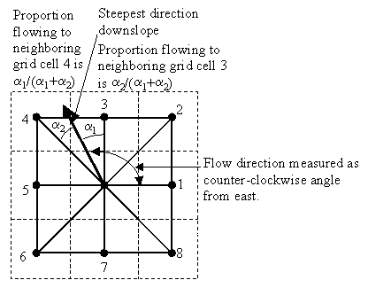

D-Infinity Contributing Area
(c) 2010 by David G. Tarboton
Calculates a grid of specific catchment area which
is the contributing area per unit contour length using the multiple flow
direction D-infinity approach. D-infinity flow direction is defined as
steepest downward slope on planar triangular facets on a block centered
grid. The contribution at each grid cell is taken as the grid cell length
(or when the optional weight grid input is used, from the weight grid).
The contributing area of each grid cell is then taken as its own contribution
plus the contribution from upslope neighbors that have some fraction
draining to it according to the D-infinity flow model. The flow from each
cell either all drains to one neighbor, if the angle falls along a cardinal
(0, π/2, π, 3π/2) or ordinal (π/4, 3π/4, 5π/4, 7π/4)
direction, or is on an angle falling between the direct angle to two adjacent
neighbors. In the latter case the flow is proportioned between these two
neighbor cells according to how close the flow direction angle is to the
direct angle to those cells. The contour length used here is the grid cell
size. The resulting units of the specific catchment area are length units
the same as those of the grid cell size.

When the optional weight grid is not used, the
result is reported in terms of specific catchment area, the upslope area
per unit contour length, taken here as the number of cells times grid cell
length (cell area divided by cell length). This assumes that grid cell
length is the effective contour length, in the definition of specific
catchment area and does not distinguish any difference in contour length
dependent upon the flow direction. When the optional weight grid is used,
the result is reported directly as a summation of weights, without any
scaling.
If the optional outlet point shapefile is used,
only the outlet cells and the cells upslope (by the D-infinity flow model)
of them are in the domain to be evaluated.
By default, the tool checks for edge contamination.
This is defined as the possibility that a contributing area value may be
underestimated due to grid cells outside of the domain not being counted.
This occurs when drainage is inwards from the boundaries or areas with
"no data" values for elevation. The algorithm recognizes this
and reports "no data" for the contributing area. It is common
to see streaks of "no data" values extending inwards from boundaries
along flow paths that enter the domain at a boundary. This is the desired
effect and indicates that contributing area for these grid cells is unknown
due to it being dependent on terrain outside of the domain of data available.
Edge contamination checking may be turned off in cases where you know it
is not an issue or want to ignore these problems, if for example, the DEM
has been clipped along a watershed outline.
Parameters
- Number of Processes
Integer
- The number of stripes that the domain will be divided into and the
number of MPI parallel processes that will be spawned to evaluate each
of the stripes.
- D-Infinity Flow Direction Grid
Raster Grid
- A grid of flow directions based on the D-infinity flow method using
the steepest slope of a triangular facet. Flow direction is determined
as the direction of the steepest downward slope on the 8 triangular
facets of a 3 x 3 block centered grid. Flow direction is encoded as
an angle in radians, counter-clockwise from east as a continuous
(floating point) quantity between 0 and 2π. The resulting flow in
a grid is then usually interpreted as being proportioned between the
two neighboring cells that define the triangular facet with the steepest
downward slope.
- Outlets Shapefile
Point Shapefile (optional)
- A point shapefile defining the outlets of interest. If this input
file is used, only the cells upslope of these outlet cells are considered
to be within the domain being evaluated.
- Weight Grid
Raster Grid (optional)
- A grid giving contribution to flow for each cell. These contributions
(also sometimes referred to as weights or loadings) are used in the
contributing area accumulation. If this input file is not used, the
result is reported in terms of specific catchment area (the upslope
area per unit contour length) taken as the number of cells times grid
cell length (cell area divided by cell length).
- Check for edge contamination
Boolean
- A flag that indicates whether the tool should check for edge
contamination. Edge contamination is defined as the possibility that
a contributing area value may be underestimated due to the fact that
grid cells outside of the domain have not been evaluated. This occurs
when drainage is inwards from the boundaries or areas with "no data"
values for elevation. The algorithm recognizes this and reports "no data"
for the impated cells. It is common to see streaks of "no data"
values extending inwards from boundaries along flow paths that enter
the domain at a boundary. This is the desired effect and indicates that
contributing area for these grid cells is unknown due to it being
dependent on terrain outside of the domain of available data. Edge
contamination checking may be turned off in cases where you know this
is not an issue, or want to ignore these problems, if for example, the
DEM has been clipped along a watershed outline.
Outputs
- D-Infinity Specific Catchment Area Grid
Raster Grid
- A grid of specific catchment area which is the contributing area
per unit contour length using the multiple flow direction D-infinity
approach. The contributing area of each grid cell is then taken as its
own contribution plus the contribution from upslope neighbors that
have some fraction draining to it according to the D-infinity flow model.